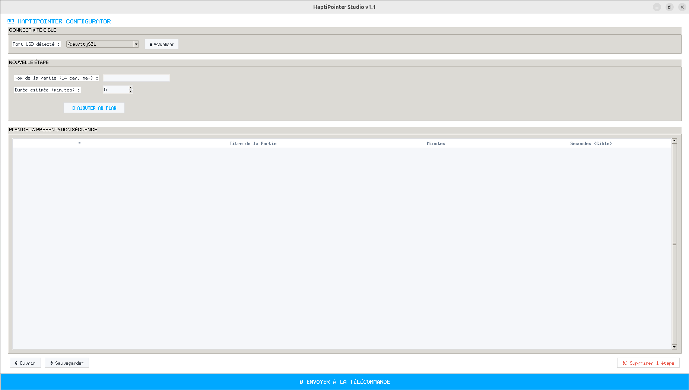
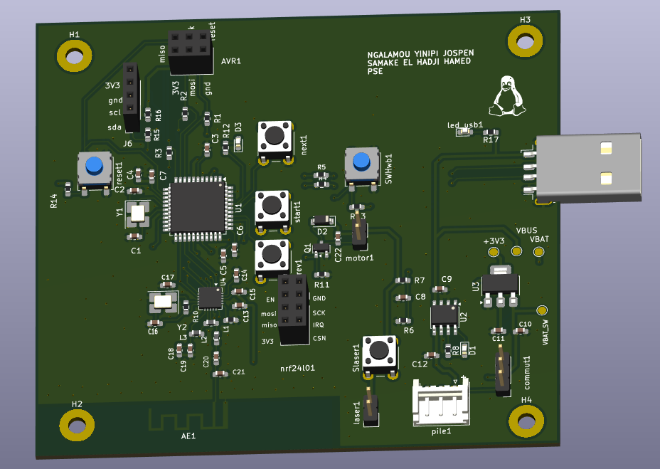
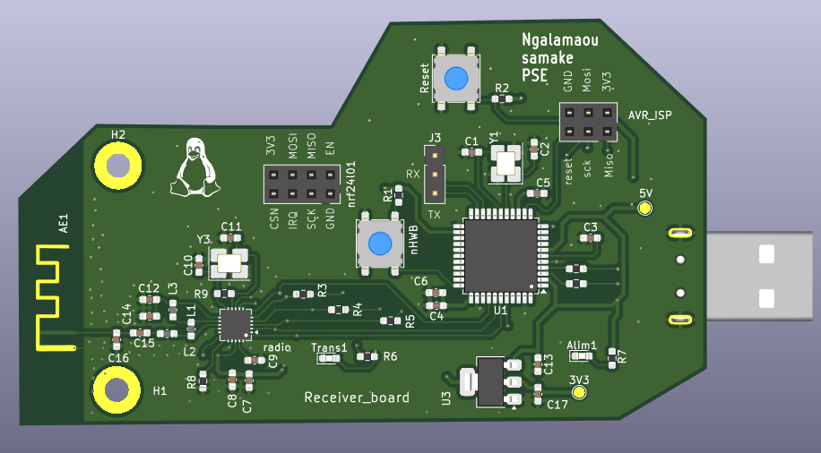

Contexte & objectif
Permettre aux orateurs de maîtriser le timing de leurs présentations grâce à des alertes haptiques silencieuses et programmables, sans nécessiter de recompilation de firmware à chaque changement d'horaire.
Démarche technique
- Architecture matérielle double : Conception sous KiCad d'une télécommande émettrice autonome (boutons, pointeur laser, moteur vibrant, alimentation batterie) et d'un dongle récepteur USB au format clé.
- Transmission radio : Communication basse consommation 2,4 GHz via contrôleurs NRF24L01 avec gestion de l'acquittement automatique.
- Firmware & USB CDC : Implémentation de la pile USB pour l'émulation du port série et écriture en direct des timings dans l'EEPROM de l'ATmega32U4.
- Application de configuration : Interface graphique développée en Python (Tkinter) permettant d'éditer la table des jalons de la présentation.
Interface logicielle & Schémas



Tests matériels en atelier
Vidéo 1 : Validation de la carte mère émettrice (test du moteur vibrant haptique et séquencement des LEDs d'état).
Vidéo 2 : Validation du dongle récepteur USB connecté, assurant la réception radio des trames.